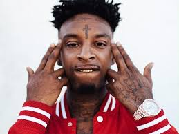

Bloods
The Bloods, also known as Original Blood Family, are an African American gang based in California. It was founded in Los Angeles, in 1972. The gang is widely known for its rivalry with the Crips. It is identified by the red color worn by its members and by particular gang symbols, including distinctive hand signs.
